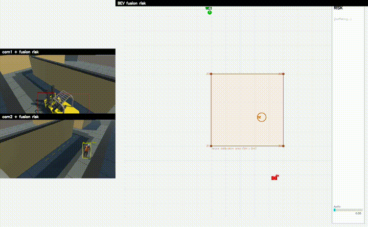
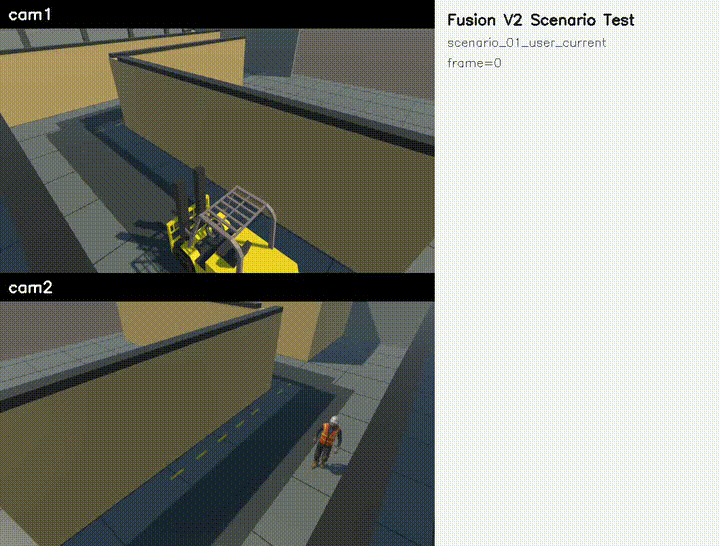
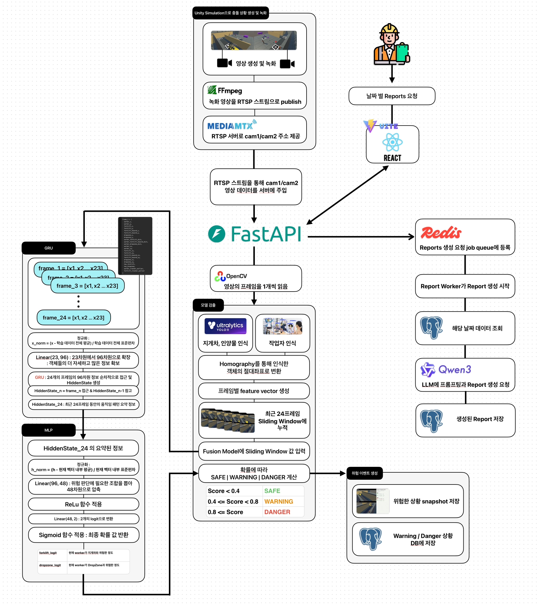
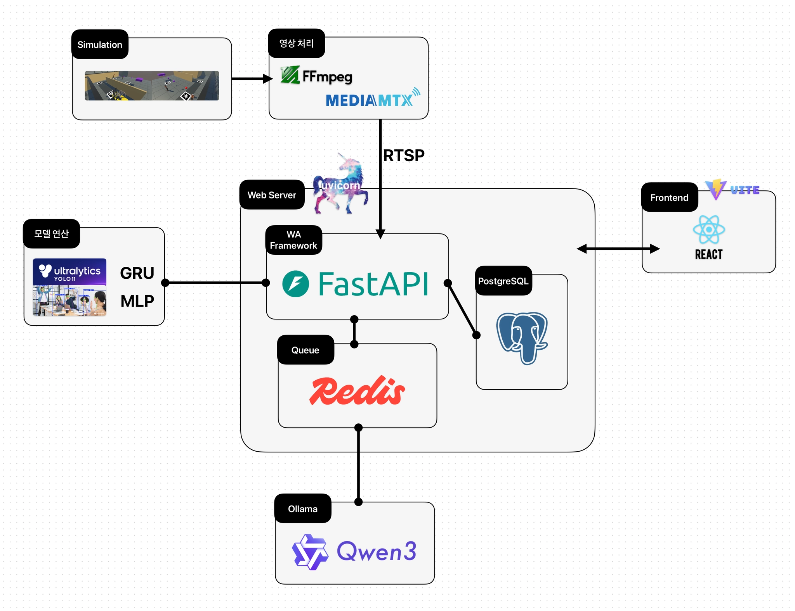
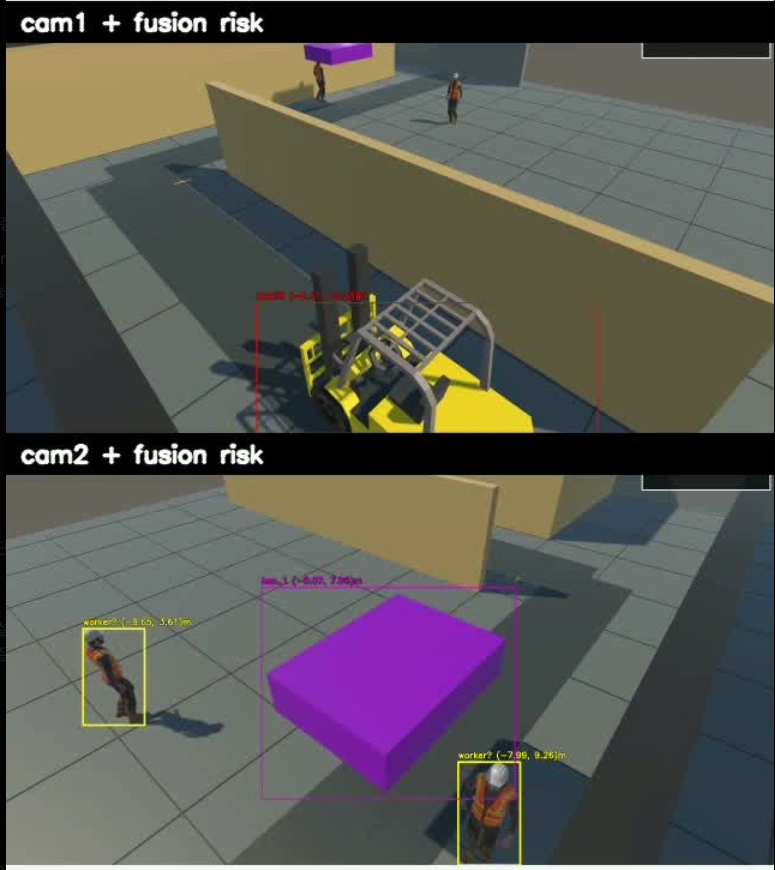

프로젝트 시연


개요
Unity로 구현한 공장 사각지대 환경에서 지게차와 작업자가 서로 직접 보이지 않는 상황을 구성하고, 두 대의 카메라 영상을 RTSP로 백엔드에 입력해 멀티뷰 기반으로 충돌 위험을 예측한 프로젝트입니다.
각 카메라에서 검출된 작업자와 지게차의 위치를 ArUco Homography를 통해 하나의 BEV 절대좌표계로 변환하고, 두 카메라 정보를 통합해 단일 카메라로는 판단하기 어려운 사각지대 충돌 위험을 Warning / Danger 단계로 예측했습니다.
역할
- Unity 기반 공장 사각지대 시나리오와 cam1 / cam2 멀티뷰 입력 환경 구성
- FFmpeg + MediaMTX 기반 RTSP 스트리밍 파이프라인 구축
- YOLO-Pose를 활용한 작업자 위치 검출, Custom YOLO를 활용한 지게차 검출 구현
- ArUco Marker와 Homography를 활용해 픽셀 좌표를 BEV 절대좌표로 변환
- cam1 / cam2에서 추정된 객체 좌표를 하나의 좌표계로 통합하는 fusion 로직 구현
- 거리, 진행 방향, TTC, 지게차 전방 기준점(FH)을 활용한 Warning / Danger 판단 로직 구현
- camera parallel, model parallel, input tuning, pose skip/cache를 적용해 3.145 FPS에서 10.148 FPS로 개선
- 1 frame 처리 시간을 약 0.320s에서 약 0.099s로 단축
- 위험 이벤트 발생 시 PostgreSQL incident log 저장, snapshot 저장, MQTT 알림, 리포트 생성 흐름까지 E2E 검증
- 대량 사고 로그 조회에서 Elasticsearch 기반 검색과 PostgreSQL 복합 인덱스 기반 검색을 비교하고, 날짜 조회 패턴에 맞춰 PostgreSQL 인덱싱을 적용해 p50 기준 0.097ms까지 조회 성능을 개선
시스템 아키텍처


적용한 추론 모델
Custom YOLO
- YOLO11n 계열 detect 커스텀 모델
- 탐지 클래스: forklift, box_1 (인양물)
- 역할: 지게차와 인양물을 bbox로 탐지하고, bbox 기준점을 절대좌표로 변환해서 Fusion 모델에 주입

YOLO - POSE
- YOLO11n-pose
- 탐지 클래스: person (worker)
- 작업자를 탐지하고 17개의 keypoint를 추출
- 이후 절대좌표로 변환하여 어디에 작업자가 서 있는지 계산
모델의 성능 지표
| Model | Accuracy | Precision | Recall | F1 |
|---|---|---|---|---|
| Custom YOLO | 97.721% | 96.449% | 97.123% | 96.785% |
| YOLO-Pose worker detection | 98.333% | 100.000% | 99.167% | 99.582% |
| Fusion V1 overall | 92.188% | 93.499% | 82.287% | 84.927% |
| Fusion V2 GRU risk prediction | 99.696% | 99.119% | 99.301% | 99.210% |
Fusion model의 V1, V2 상세 비교
| 구분 | V1 | V2 |
|---|---|---|
| 판단 방식 | 규칙 기반 + TTC + FH + DropZone 조건 | 24프레임 좌표 window 기반 GRU |
| 평가 대상 | 기존 Fusion overall 평가셋 | geometry_future V2 평가셋 |
| 라벨 기준 | 기존 위험 판단/시나리오 기준 | 좌표 거리 + 미래 12프레임 위험 기준 |
| 의미 | 규칙 기반 위험 판단 성능 | 좌표 시계열 기반 위험 예측 성능 |
개선 사항
단일 카메라만으로 사각지대 충돌 위험 판단의 어려움
상황 1Cam1 또는 Cam2 한쪽 영상만으로는 지게차와 작업자의 실제 위치 관계를 판단하기 어려웠습니다.
두 카메라의 검출 결과를 ArUco Homography 기반 BEV 절대 좌표로 변환하여 하나의 평면에서 충돌 위험을 계산할 수 있었습니다.
카메라 별 좌표 오차
상황 2Cam1, Cam2 모두 잡힌 객체의 변환된 절대 좌표가 다르게 나타나 BEV 상 위치의 신뢰도가 떨어졌습니다.
Cam1 / Cam2 각각에 대해 4개의 ArUco Marker를 기준점으로 Homography를 재생성했습니다. cv2.findHomography 기반으로 픽셀 좌표를 BEV 절대 좌표로 모두 변환하고 카메라 별 Homography를 분리 저장했습니다. 이로써 최종 캘리브레이션 기준, 평균 재투영 오차 2.72e-7m ~ 4.58e-7m로 출력 기준 0.00cm 수준까지 보정하여 신뢰도를 높였습니다.
작업자 인식 불안정
상황 3특정 시나리오에서 작업자가 Cam1 또는 Cam2 한쪽에서 bbox / pose로 안정적으로 검출되지 않아, fusion 모델의 작업자 관련 입력이 비어 충돌 위험 예측이 불가능했습니다.
YOLO11s-pose를 적용하고 pose 입력 크기를 640으로 유지했습니다. 카메라 위치와 FOV도 조정해 작업자가 프레임 안에서 충분한 크기로 보이도록 수정했고, 충돌 시나리오 3개의 총 45회 벤치마크 기준 작업자 detection 확률 1.00을 확보했습니다.
위험 알림 지연
상황 4지게차 bbox 중심점을 기준으로 위험도를 계산해 실제 충돌 가능성이 높은 전방부가 아닌 차체 중심이 기준이 되었고, Warning / Danger 판단이 늦게 발생했습니다.
이전 프레임 좌표와 현재 좌표로 진행 방향 벡터를 추정하고, 현재 위치보다 진행 방향 앞쪽에 FH(Front Hazard) 기준점을 추가했습니다. FH offset은 비교 실험 후 1.0m로 적용했고, Danger 시점을 최대 0.7s, 최소 0.15s 앞당겼습니다.
실시간 처리 성능 부족
상황 5초기 순차 처리 구조에서는 cam1 pose, cam2 pose, custom YOLO, fusion 계산이 대부분 한 루프 안에서 순차적으로 실행되어 평균 약 3.145 FPS, frame당 약 0.320s 수준이었습니다.
카메라 단위 병렬 처리, 모델 단위 병렬 처리, custom YOLO 입력 크기 640에서 512 조정, pose 2프레임 1회 추론 및 cache 재사용을 적용했습니다. 45회 벤치마크 기준 평균 10.148 FPS, frame당 98.966ms까지 개선했습니다.
| 단계 | 내용 | FPS | 직전 대비 FPS 향상 | 1 frame 처리시간 | 직전 대비 처리시간 감소 |
|---|---|---|---|---|---|
| 0 | 초기 serial 처리 | 3.145 FPS | - | 0.320s | - |
| 1 | 카메라별 병렬 처리 | 5.488 FPS | +74.5% | 0.183s | 43.0% 감소 |
| 2 | 모델별 병렬 처리 | 6.335 FPS | +15.4% | 0.158s | 13.5% 감소 |
| 3 | custom YOLO 이미지 크기 조정 | 7.364 FPS | +16.2% | 0.136s | 14.2% 감소 |
| 4 | pose 2프레임에 1번 추론 | 10.148 FPS | +37.8% | 0.099s | 27.0% 감소 |
frame time 감소율 = (직전 처리시간 - 새 처리시간) / 직전 처리시간
장기 작업으로 인한 API 응답 지연
상황 6리포트 생성 API가 Ollama 리포트 생성을 모두 마칠 때까지 응답하지 않는 동기 처리 구조였습니다. 실제 날짜 기반 리포트 생성 요청은 약 71초가 걸렸고, 목록 조회 API는 전체 HTML contents까지 반환해 응답 크기가 커졌습니다.
리포트 생성 작업을 Redis 기반 Background Job으로 분리했습니다. 서버는 작업 등록 후 Job_id를 즉시 반환하고, 프론트는 job 상태를 조회한 뒤 완료 시 리포트를 가져오도록 개선했습니다. 목록 화면에는 경량 조회 API를 추가했습니다.
| 내용 | 개선 전 | 개선 후 | 개선 효과 |
|---|---|---|---|
| 리포트 목록 응답 크기 | 97,761 bytes | 729 bytes | 약 99.25% 감소 |
사고 로그 검색 성능 개선
상황 7총 300,391건의 사고 로그를 구성해 300건의 사고 로그를 1000일에 분산한 조건으로 시험했습니다. 빠른 검색을 위해 Elasticsearch를 도입했지만, 실제 날짜 조건 성능은 기대만큼 나오지 않았습니다.
날짜 정보를 별도 컬럼으로 분리하고 PostgreSQL에 조회 패턴에 맞는 복합 인덱스를 적용했습니다. 날짜 조건 검색 p50은 0.097ms로 측정되었고, Elasticsearch 대비 약 46배 빠른 성능을 확인했습니다.
| 실험 항목 | 방식 | 평균 | p50 | p95 | 결과 |
|---|---|---|---|---|---|
| 날짜 컬럼 검색 | PostgreSQL Index | 0.480ms | 0.097ms | 0.660ms | 가장 빠름 |
| 날짜 컬럼 검색 | Elasticsearch Filter | 5.376ms | 4.528ms | 7.960ms | PostgreSQL 대비 불리 |
공중 인양물의 DropZone 좌표 오차 및 위험 반응 손실
상황 8공중 인양물은 바닥에 붙어 있는 물체가 아니기 때문에 bbox 기준 절대좌표 변환이 안정적으로 되지 않았습니다. 그 결과 프레임이 끊기고 위험 상황을 놓치는 문제가 있었습니다.
카메라 위치를 조정하고, bbox 중심 픽셀에서 카메라 ray를 쏴 인양물과 같은 높이에서 만나는 지점을 절대좌표로 계산했습니다. 반경 2.0m를 DropZone으로 계산해 BEV 내 프레임이 안정적으로 유지되도록 개선했습니다.
| 항목 | 개선 전 | 개선 후 | 비고 |
|---|---|---|---|
| raw DropZone 누락 프레임 | 64 / 120 | 0 / 120 | 누락 프레임 없음 |
| tracker 후 DropZone 누락 프레임 | 48 / 120 | 0 / 120 | 누락 프레임 없음 |
| Danger frame | 0 | 20 | 위험 판단 누락 감소 |
| first_danger_frame | 없음 | 45 | 위험 판단 누락 감소 |
| W01 DropZone 최소 거리 | 1.433m | Danger 발생 | 1.4m 거리에서도 위험 알림 |
| W02 DropZone 최소 거리 | 1.801m | Danger 발생 | 1.8m 거리에서도 위험 알림 |
규칙 기반 Fusion 모델의 위험 판단 한계
상황 9기존 모델은 BEV 절대좌표, 거리, TTC, 지게차 진행 방향, FH 기준점 등을 조합해 Warning / Danger를 판단하는 규칙 기반 구조였습니다. 시나리오가 복잡해질수록 임계값과 예외 조건이 계속 늘어나는 한계가 있었습니다.
최근 24프레임 동안의 작업자, 지게차, FH 기준점, 인양물 DropZone의 BEV 절대좌표 시계열을 입력으로 사용하는 GRU 기반 Fusion V2 위험 예측 모델을 구성했습니다.
Fusion V2 학습 데이터는 실제 Unity 녹화 시나리오 7개와, SAFE / WARNING / DANGER 상황이 균형 있게 포함되도록 절대좌표 기반으로 절차적 생성한 synthetic 시나리오 450개를 결합해 구축했습니다. 그 결과 기존 Fusion V1 대비 F1-score는 84.9%에서 99.2%로 14.3%p 개선되었고, Accuracy는 92.2%에서 99.7%로 7.5%p 개선되었습니다.
| 항목 | 값 |
|---|---|
| 입력 | 24프레임 BEV 절대좌표 시계열 |
| Feature 수 | 23개 |
| 실제 녹화 시나리오 | 7개 |
| Synthetic 시나리오 | 450개 |
| 전체 window | 89,176개 |
| 학습 window | 67,096개 |
| 검증 window | 11,040개 |
| 모델 | 2-layer GRU |
결과 및 소감
이번 프로젝트에서는 단순히 객체를 탐지하는 데서 끝나지 않고, 실제 산업 현장에서 발생할 수 있는 사각지대 충돌 상황을 Unity로 구성하고, 이를 RTSP 입력부터 객체 검출, 절대좌표 변환, 멀티뷰 좌표 통합, 위험 판단, 알림, DB 저장, 리포트 생성까지 하나의 E2E 파이프라인으로 구현했습니다.
특히 단일 카메라로는 판단하기 어려운 지게차와 작업자의 위치 관계를 ArUco Homography 기반 BEV 절대좌표계로 통합하면서, 멀티뷰 기반 충돌 예측 시스템의 전체 흐름을 직접 설계하고 검증했습니다. 초기에는 좌표 오차, 작업자 검출 불안정, 위험 알림 지연, 낮은 실시간 처리 성능 등 여러 문제가 있었지만, 카메라 배치 조정, FH 기준점 도입, 병렬 처리, 입력 크기 튜닝, pose cache 적용을 통해 실시간 처리 성능을 3.145 FPS에서 10.148 FPS까지 개선했습니다.
이 프로젝트를 통해 AI 모델의 단순 추론 성능뿐 아니라, 영상 입력, 좌표 변환, 실시간 처리, 비동기 백엔드 작업, DB 검색 최적화, 프론트 대시보드까지 연결되는 백엔드 중심 AI 시스템을 어떻게 설계하고 병목을 개선해야 하는지 경험할 수 있었습니다. 향후에는 실제 CCTV 영상 기반 데이터셋을 추가해 Unity와 현실 환경 간의 도메인 차이를 줄이고, 작업자 ID 식별 안정화와 운영 모니터링까지 확장해 실제 현장 적용 가능성을 높이고자 합니다.